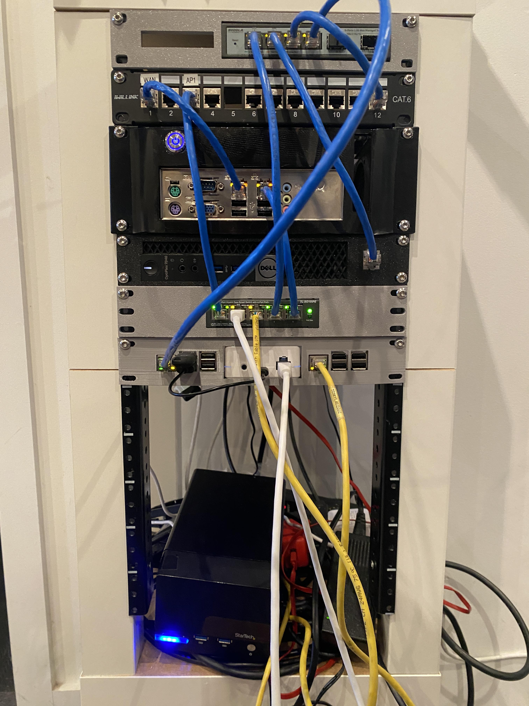
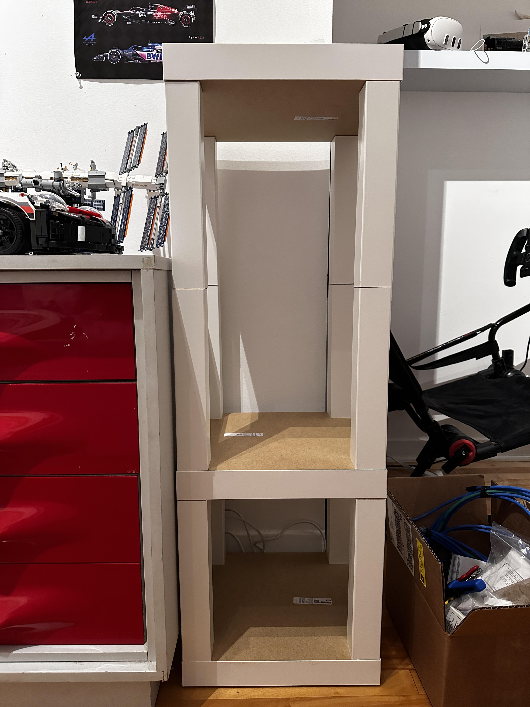
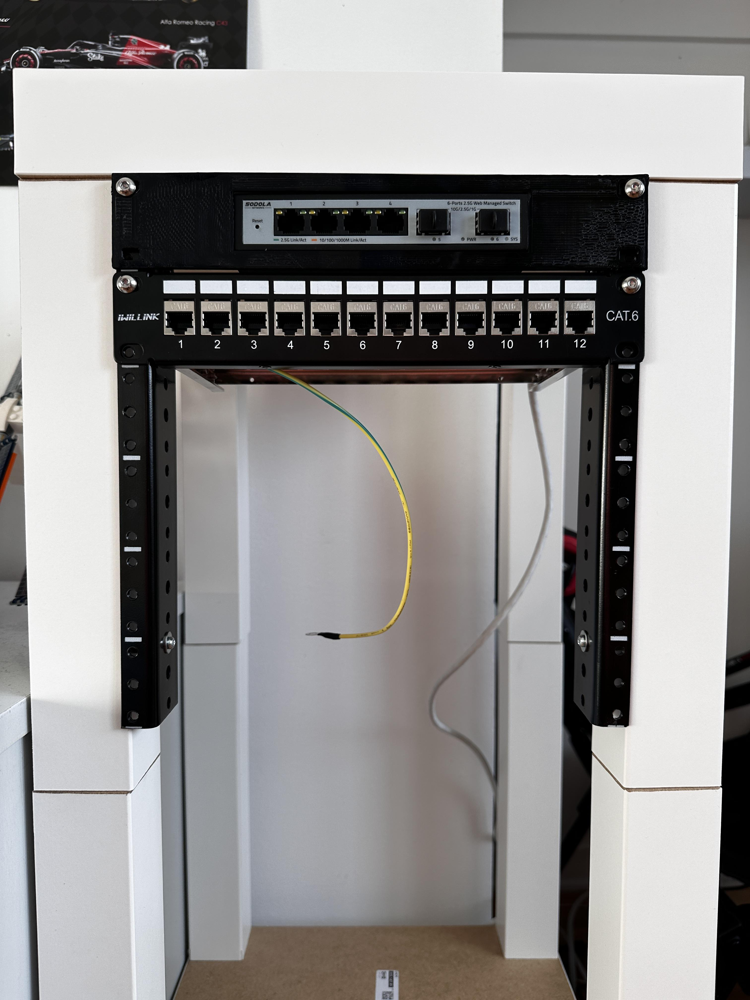
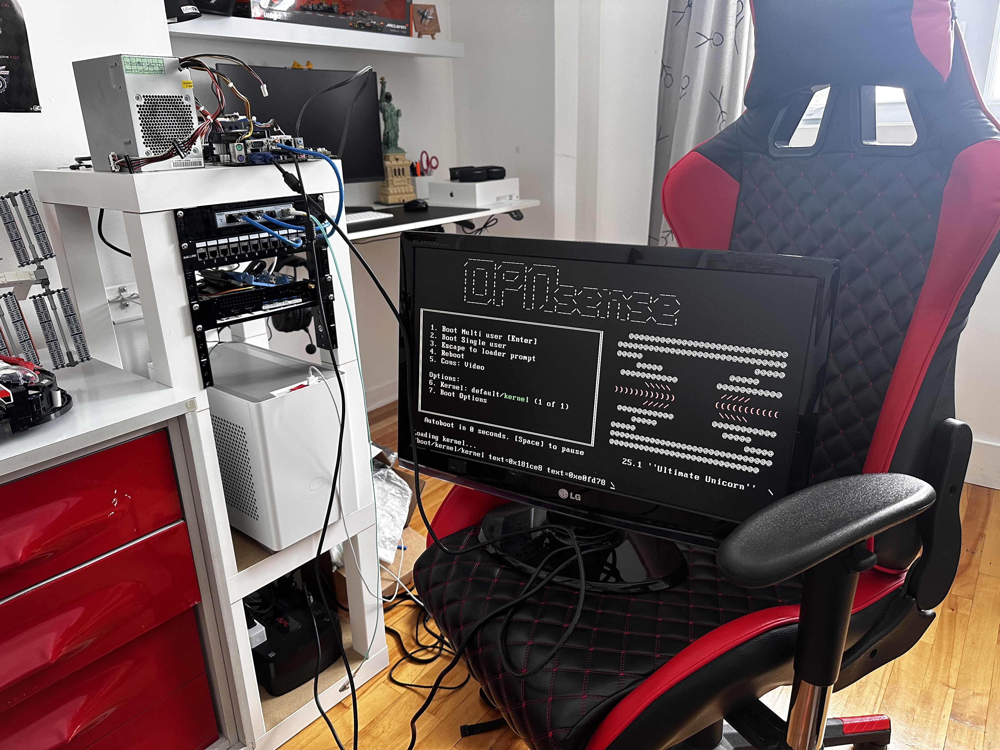
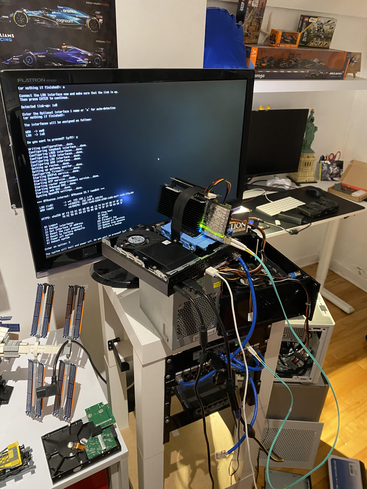
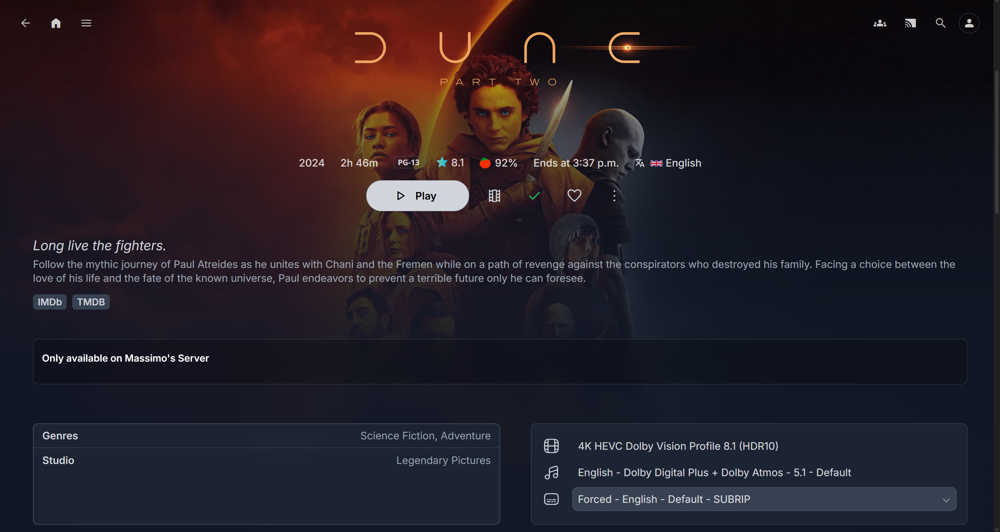
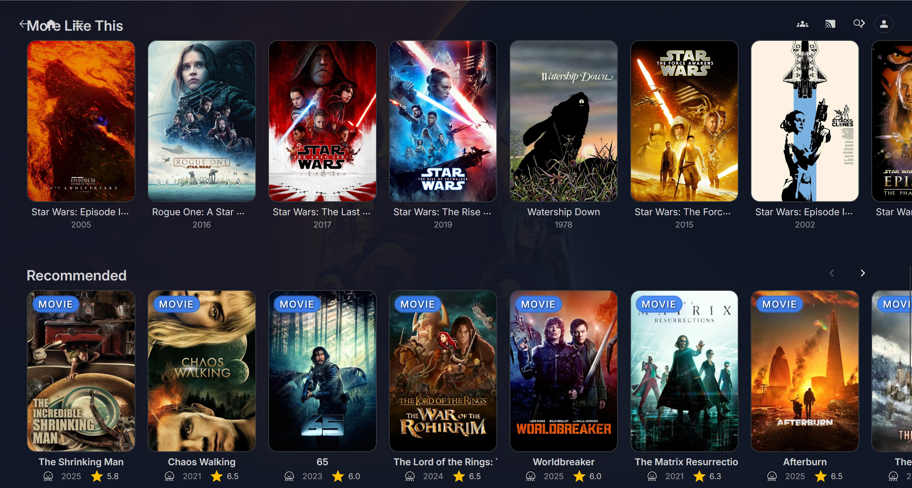
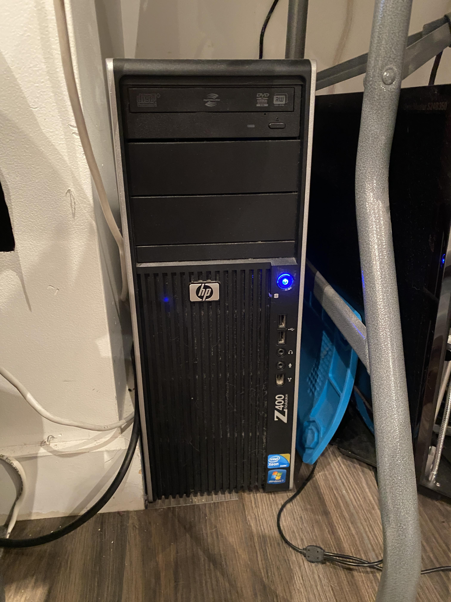

The Idea
I got interested in homelabbing and self-hosting through YouTube videos by creators like Hardware Haven and NetworkChuck. I liked the freedom that you get with self hosting and privacy from not sharing your data with large corporations. It's crazy the amount of services you can run on just random old hardware. I saw people building their racks out of IKEA tables (LACK racks) and found it a cool and cheap alternative. However, LACK racks are for 19 inch racks and I like the idea of 10 inch racks since they don't take up a lot of space and I can 3D print custom units for it. That's when I saw the LACK chairs that are almost perfect for 10 inch racks. I just bought some supports made for server racks and drilled it on the inside legs of the chair and I got myself a server rack!

I stacked 3 chairs on top of each other, with the bottom one upside down for storage.
Network
Once I got the rack built, I started installing some hardware in it. I 3D printed a mount for a cheap 2.5Gbe switch I got on marketplace and added a keystone unit.

Next, I needed a router. I picked up a cheap mini ITX board with an old CPU on marketplace for $20 and planned on installing a quad port SFP+ NIC in it that I had lying around. I tried so hard to get it to work but the board was so old (it's from 2002) that it just wouldn't boot with the NIC installed. I ended up trying it with a Dell Optiplex 7040 mini PC with an M.2 to PCIe adapter and it worked right away. I installed OPNsense on it and that was my router for a while. The NIC did heat up a lot though so I hard wired a fan to a 12V pin on the adapter to cool it down. However, I felt like the router was a little too overkill. I could use the 7040 for something that would use all of its power, and the mini ITX board was lying around doing nothing. So I ditched the 7040 and NIC combo and installed OPNsense on the mini ITX board instead. The board has two onboard gigabit ethernet ports so I just used one for LAN and another for WAN. My internet is limited to 500Mbps so gigabit ethernet is fine for now. The only downside to not using the NIC is that I don't have four ports on the router so I can't have dedicated ports for VLANs but I can still use VLANs with a managed switch. I also don't have a 10Gbe connection to the router and other devices that would have been connected to the NIC but honestly none of my devices would have been able to use the 10Gbe ethernet connection anyway. So with that, I got myself a cheap little OPNsense router for my network!

Installing OPNsense on the mini ITX board.

Installing OPNsense on the Dell mini PC.
Media Server
With the 7040 mini PC freed up, I decided to use it as a media server. I installed CasaOS on it for easy management of the docker containers and installed Jellyfin along with a few other services. I had started with Plex as the media server but I wanted to share the server with others outside my network and didn't want to pay for Plex Pass. I also installed Seerr which is a great software for managing requests. For the storage, I got two 4TB drives with an encolsure on marketplace for a good price and installed it in the rack. Right now I don't have a shelf for the drives so I just have them sitting at the bottom of the rack.

My Jellyfin setup with custom CSS.

I got the Seerr plugin in Jellyfin working to show recommended movies and shows.
Home Assistant
For my home automation, I decided to set up Home Assistant. I installed it on a Raspberry Pi 5 that I had lying around and added it to the rack. I also put the Lutron Smart Hub that connects to all of my Caseta switches right next to it. I also have a few Zigbee devices that connect to Home Assistant with a little Zigbee USB dongle plugged into the Raspberry Pi. I plan on adding more smart switches and plugs around the house and creating automations with Home Assistant.
Storage Server
I have TrueNAS running on an old office PC that I have tucked away next to the rack. Fun fact: this PC was my childhood PC that I used to play Minecraft on. It has an old CPU and GPU that's good enough as a storage server. I threw in two 1TB drives and set them up in mirrored for redundancy. Right now I have Immich and Nextcloud running on top of TrueNAS and I plan on adding more apps like Vaultwarden and other storage apps.

The TrueNAS server running on an old office PC.
Next Steps
There is still a lot of hardware and services I want to add to the rack. I want to set up a Frigate server and add some small things like a DNS server and a server dashboard. One crucial thing I need to do is add a UPS to the rack. I used to have one but I think it kind of blew up and I just have stored away somewhere. This project is nowhere near done so feel free to check back for any updates!